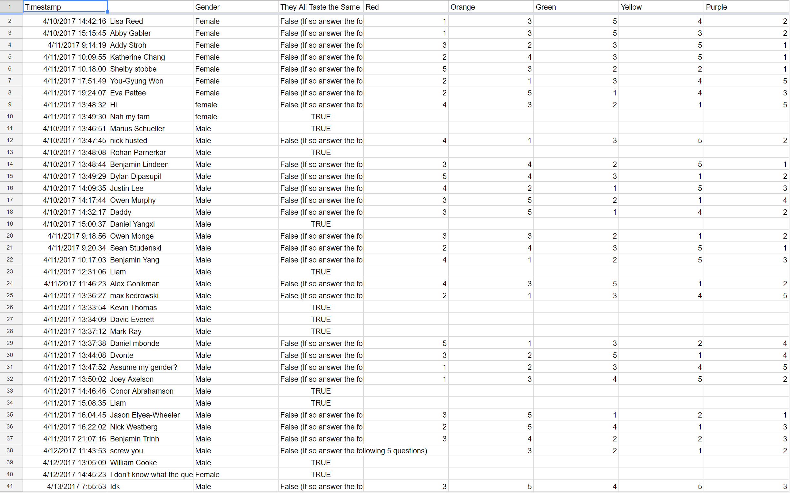

How do peoples favorite color of skittles and their gender compare?
We gave out a survey to 90 people asking what there favorite color of skittle is and we also recordeed thier gender
Our results show that
Girls Prefer in this order Green, Red, Purple, Yellow, Orange
Boys Prefer in this order Yellow, Orange, Green, Red, Purple
We found that girls are as likley to say that they like a color of skittle as they are not to care, but boys have a hige percentage that dont care.
For all of the skittle boys and girls like them about the same, while only seeing girls like purple and red more than boys do.
Girls Don't Give fake / troll responces while some boys do

Conclution, there is
Boys tend to not care most of the time about the color of skittle where girls care most of the time